- The Z Programming Language -
Development Log 2020
T1W10
In-line with the Project Plan, the development
evironment was installed. This included installing the
Deno runtime, and setting up the environment for working
with the Visual Studio Code IDE. The primary image required,
the 'Z' logo, was designed.
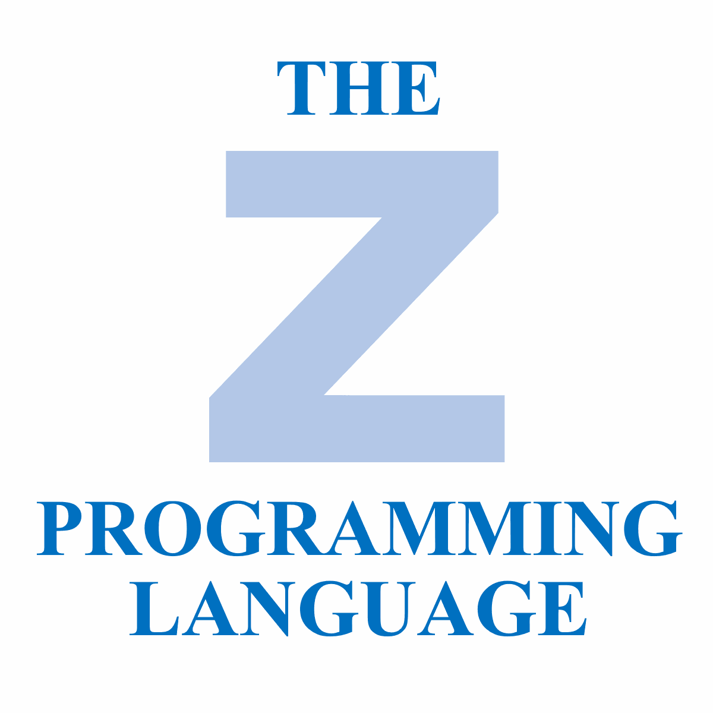
T1W11
11/12th April
To meet the T1W11 plan, the lexer, syntax-checker, and debugging
messages were developed. These were developed as separate modules
which in hind-sight probably slowed the implementation of the
algorithms, due to module-importing complexities.
By the end of the two days, the compiler could:
- read a source file,
- generate an ordered list of language tokens,
- and generate a syntax tree based only on the
PROG ENDPROG and 'assignment' structures.
The Lexing was achieved using regular expressions, which tested
each word input and returned a category (keyword, number, etc.).
Hol.W1
13th April
Today was spent attempting to create a special Syntax-Checker
that could accept a list of rules and test given data. This
was an interesting endeavour, however it proved fruitless due
to difficulties managing recursion. It may be picked up during
the later stages of development to make the code more flexible
and easier to understand.
Part of the setback was due to complexities of JavaScript's
function parameters. It is easy to forget that an Array
being passed in is passed as a reference; this means that a
change to it in an external function (such as one called to
recurse) will change its contents back outside, causing headaches
when trying to figure out where something went wrong. This is
solved by print the value of the Object when it is passed in,
and when that called function returns.
14th April
Today focused on implementing more syntax checks. This included
parsing Input Statements, Conditions (which required recursion),
Do Blocks, Pre-Tests and Output Statements. It also threw certain
errors depending on where an invalid token was encountered. Each
parser for a structure type was called, "popping" each token
off of the Token-Array. If it threw a ParserError, the mistake
was "mine" for calling it and so the Syntax-Checker attempted
to parse the tokens with another parser. If a SyntaxError was
discovered, the token was discarded and this meant that the user
input was invalid, i.e. a malformed statement was provided.
At the end of the day, the program could reliably provide a
Syntax Tree for more of Z's features.
15th April
Today focused on finishing the Syntax-Checker, and implementing
the compiler to Python. An error was found in the syntax-checker
regarding scopes. Some keywords end a scope, while others end a
structure. A distinction was made and this solved an issue whereby
the end of the program was reached because too many scopes were
exited, thus leading to the end of the input by exiting the PROG
scope.
The compiler included special functions for converting input from
the user to numbers or strings depending on the input data. This
was achieved by including a Python function in the outputed code.
As a test of the compiler, a fizzbuzz program was successfully
written.
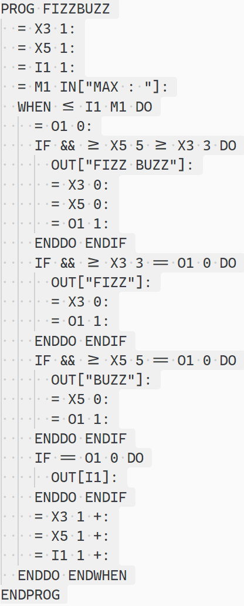
16th April
Today focused on polishing the compiler some more. The Python
program was supplemented with another function, allowing
variables of different types to be cast and used in assignment
statements. This meant casting the value to be assigned to the
data type of the variable to hold the value. This means that if
A1 holds the value Hi, then
= A1 2 + will result in A1 having the
value Hi2.
To further test the compiler, Modulo, Fibonnaci and Squares
programs were written and compiled and run successfully.
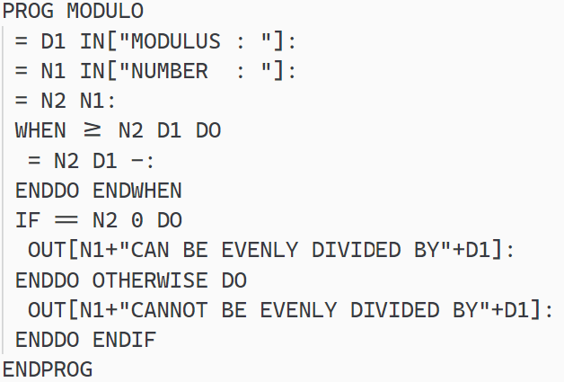
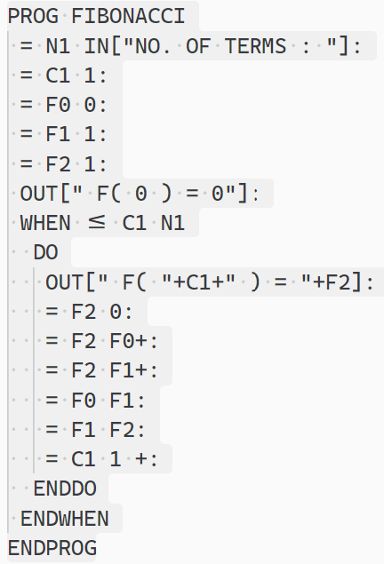
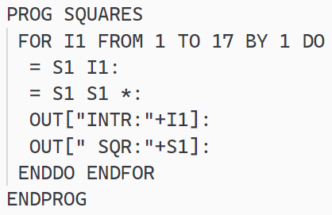
Hol.W2
Work has been delayed by a week, but this is works with the
Project Plan which allows for extra buffering should delays
be encountered in development.
T2W1
28th April
Begin the process of cleaning up folder structure, and think
about a pre-compile stage to filter lexical tokens.
1st May 2020
Convert to an Object based approach for parsing.
I re-wrote the parser and lexer, to be cleaner. Internal documentation is still lacking.
It runs surprisingly quick, almost instantaneously!
3rd May 2020
GUI in place, with File, Edit, Help buttons and menus visible but not functional.
The editor also supports syntax highlighting.
4th May 2020
Minor tweaks to formatting page.
T2W3
13th May 2020
Error: Not parsing end of statement correctly.
Accidentally commented a line that removed the closing "]" for OUTPUT statement.
Error: Missing end of statement throws compilation.
Turns out that t.shift() was removing the token on error,
and not allowing a recovery. Replaced with t[0].
Considering re-doing to the parser again to present a clearer logic,
and push errors to a list, rather than throw (and have to deal with messy try-catch blocks)
T2W4
22nd May 2020
After reviewing Web technologies, the "New" option
is not needed in the "File" editor menu. A HTML input
can be used to both open a file, and the native dialog
also allows creating a new file.
The "Info" option is also seeming to be unnecessary, and so
too will be removed.
The "Cut", "Copy", "Paste" menus are nice, but can be completed
by the user using Right-Click and are thus unncessary. Thus,
"settings" will be moved to the "File" menu, and the "Edit" menu
removed.
T2W5
27th May 2020
The Web Editor is now capable of send a script to be run on the server.
Next to be implemented is WebSockets between the browser and server.
T2W6
3rd June 2020
The WebSocket interface works at a basic level. A script can be compiled
from user input on the editor, and run, accepting input and displaying output,
in the program execution screen.
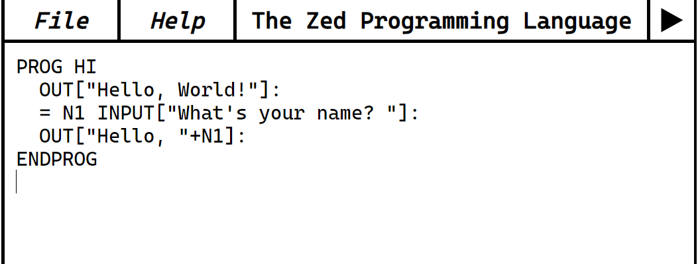

5th June 2020
Going through each part of compiler for refactor. Lexer improved/simplified.
6th June 2020
Reading up on compiler.
Refactor In/Out, Assignment, Condition Code, simplification and following the single fail per statement rule.
Implementing Unit-Tests to test Zed Compiler without needing to compile a script. This was extremely valuable.
T2W7
13th June 2020
Research was done to better understand the intricacies of a compiler, and to understand the different phases. This was very valuable to beginning the re-write.
How a compiler recovers.
T2W8
15th June 2020
Refactoring Parser, enabling code to be cleaner and easier to read. Remove duplication of parsing string/number/variable.
The follow were of great help in including file functionality into the editor.
https://stackoverflow.com/questions/3582671/how-to-open-a-local-disk-file-with-javascript
https://stackoverflow.com/questions/13405129/javascript-create-and-save-file
20th June 2020
Work was done on the usability of the editor, the Zed Programming Language manual was written,
code comments were modified to become clearer in` the compiler source code and they were also added as a feature in Zed.
Host.ts and Zed-Edit.js were created to further modularise code being used.
T2W9
22nd June 2020
A bug was encountered whereby a SWITCH WHEN was allowing values between the WHEN blocks that should
have been labelled as errors.
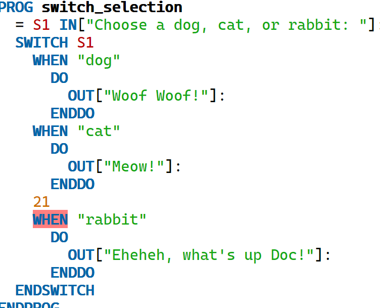
Looking at the tokens list, it is expected that the output should follow the pattern of keyword, string, keyword, string ...
But looking at the output below, it is clear that the "21" is not following a keyword. So something must be wrong.
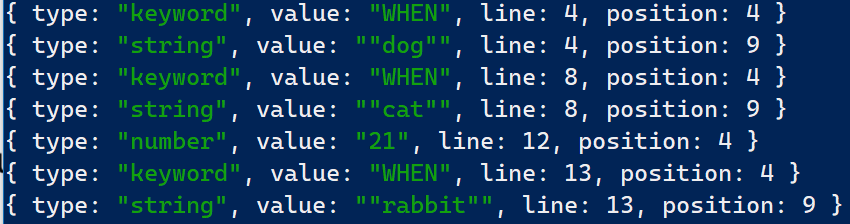
Upon looking at the code, it was a messy while statement, that had logic all over the place.
The main issue was the skipToNextWhen to next when which was interacting unexpectedly with the condition in the javascript while loop.
The fix was to simplify the loop logic, and keep any break conditions inside.
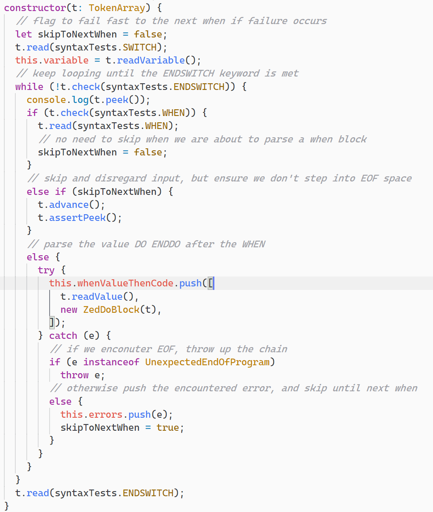
The new code is visually much easier to follow, and it is clear what drives the decisions the parser makes.
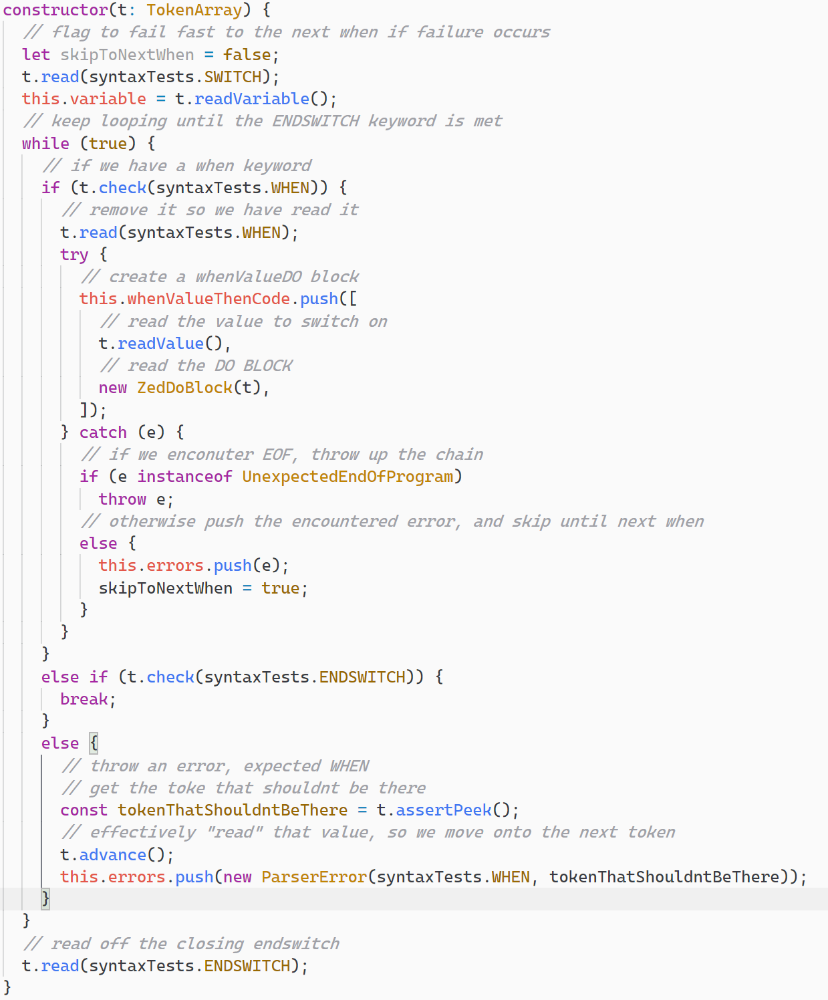
The correctly shown error, as a result of the fix, is below.
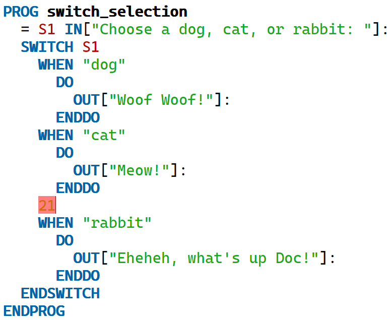
Completion!
The project is now complete, and a documentation of the Zed Language and editor is provided in the manual,
"The Zed Programming Language".